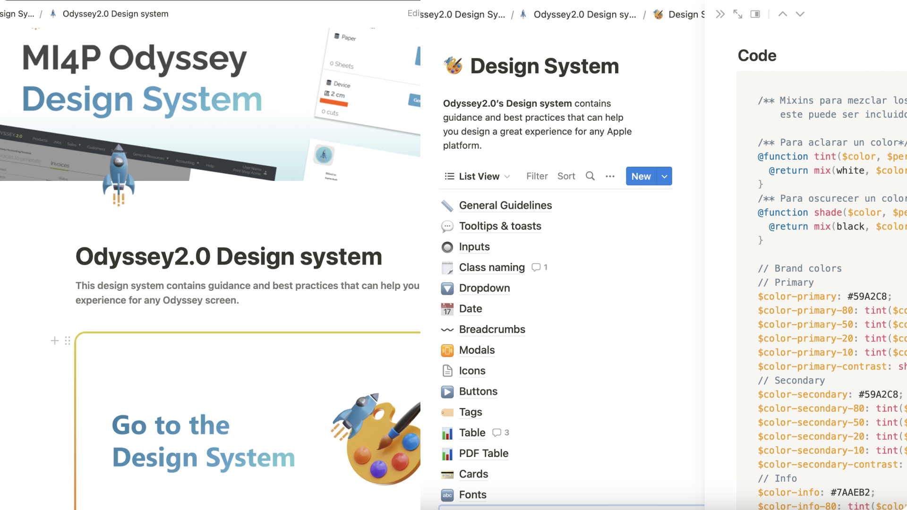
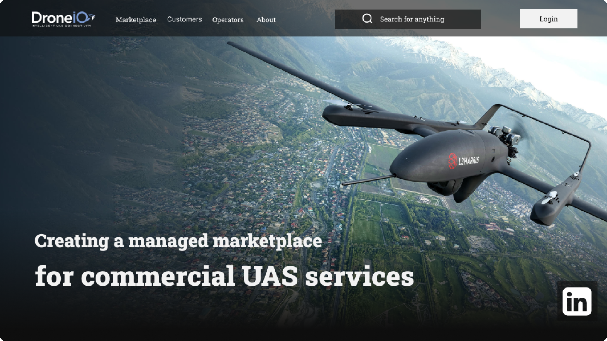
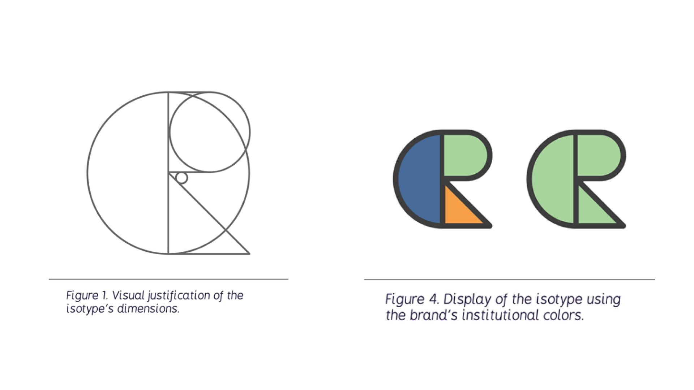

< Back to home
Carnal
'Carnal' is a robust project, featuring audio interviews accompanied by a photo of each
interviewee's hand.
The endeavor presented a couple of challenges. Firstly, automating the upload process for
the client's desired thousand interviews proved essential. To achieve this, we developed
an exclusive client-accessible internal database, allowing them to add, edit, or delete
interviews seamlessly.
Another major challenge was implementing a 3D interface for the homepage, as per the client's
request. Leveraging 'three.js', we successfully crafted a dynamic menu enabling users to select
their preferred interview for viewing.

Odyssey 2.0
Odyssey is a highly technical MIS designed to manage printing resources where I assumed the role of
a UI engineer.
The initial hurdle was enhancing the website's visual friendliness. Given its technical nature, creating
a more accessible UI was crucial to balance the complexity of navigation. We tackled this by developing
an in-house UI kit that we later scaled up into a comprehensive design system.
This undertaking represents the largest project I have been involved in, with a collaborative effort between
a UX team, a UI team, and a development team, all working together to create a cutting-edge MIS tailored for
the North American printing sector.

Atotonilco
I had the opportunity to work for the film studio Atotonilco, where I undertook the task of creating their
web identity from scratch.
In this role, I served as both a project manager and product designer. This required effective communication
skills to convey the technical capabilities of the development team to the client and the other way around. Moreover,
it was essential to make the website organized and elegant, to appeal to potential investors and donors.
Throughout this project, I successfully navigated the complexities of managing communication and expectations between
the various stakeholders, resulting in a compelling and functional web platform that met the film studio's needs and
aspirations.

Odyssey 2.0
I had the privilege of collaborating with a UX team and a front-end team to develop the design system for
the website Odyssey2.0.
Leading this endeavor brought forth various challenges and opportunities. I began by creating a comprehensive
UI kit that covered all the design and visual aspects of the project. This involved conducting a thorough inventory
of all the components used on the site and establishing clear rules for each of them.
To enhance the code organization, we complemented the initial implementation with Scss class naming and we opted for
Notion as the platform to host our design system. This collective effort ultimately resulted in a well-structured and
visually appealing system that enhanced the user experience and facilitated future updates and scalability.

DroneIQ
I had the opportunity to lead the design of a web page and application for an American
company offering drone delivery services.
Given the delivery service's orientation towards the health sector, I incorporated specific guidelines into the
design process. This included developing a straightforward icon catalog and color palette that adhered to the company's
requirements. Additionally, I created various illustrative examples, following the same design principles.
One of the highlights of the project was designing a 3D carousel interaction that showcased each member of the company.
The end result was a modern and visually engaging web page and application that effectively catered to the company's
technological nature and its specific audience in the health sector.

Re Estrenon
Odyssey is a very technical MIS for managing printing resources targeted torwards elderly people.
For this project I acted as the UI engineer and UX designer and it presented some very unique challenges.
The first challenge was to make the website more visually friendly. Because it is a very technical website,
having more accesible UI would balance out the complexity of the navegation. We started off developing an
in-house UI kit and scaling it up to a design system.
This project has been the largest project I have been a part of with a UX team, a UI team and a dev team
working alongside each other to accomplish a highly competitive MIS in the north american printing sector.

Zentiago
I was comissioned to build a full video for the artist Zentiago. This project was challenging because I was
in charge of every aspect of it, from the ideation up to editing and deliverying a finished product.
The process had several phases; I started by scaning the artist through photogrammetry, and once I had the
3D models, I started to work on rigging and animation. The last step was creating textures and rendering.
Through the use of photogrammetry I was able t oachieve a photo-realistic look that was alligned with the
artist's requirements. This photorealistic look could also be exploited for merchandise with 3D printing in a
nearby future.

Cherry Roma
I collaborated on this project with the Los Angeles based studio Cherry Roma. My role on this project
was to design and create a 3D isotype and mascot for the studio that could function as merchandise as well.
Based off of some rough sketches they provided me with, I started designing, modelling and creating textures.
I also got to rig the model and give it some animations. I also worked on an interactive model that had some
commands such as: following the mouse and when hovered have an animation.
The studio also had the idea of making necklaces with the isotype for merchandise. So I also worked on some
mockups using the 3D model with the purpose of visualizing the actual product.

Tajyn
delete ?

Carnal
delete ?

Ultra P
ultra p horizon text test